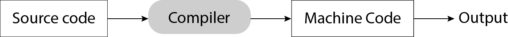
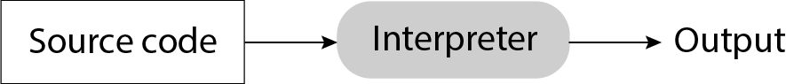
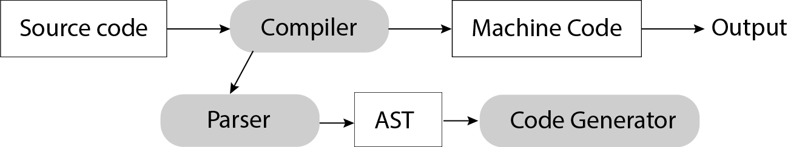
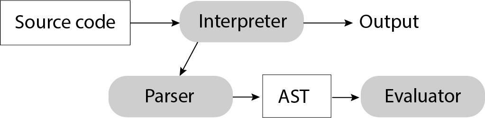
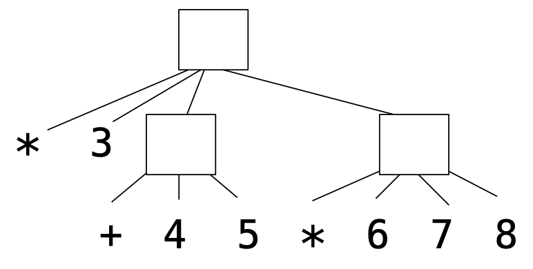
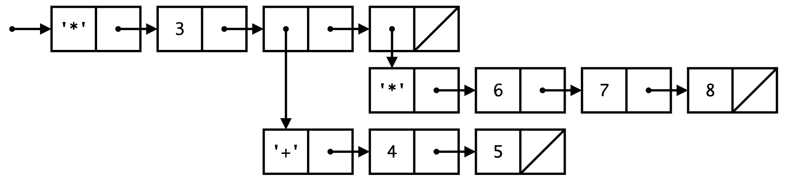
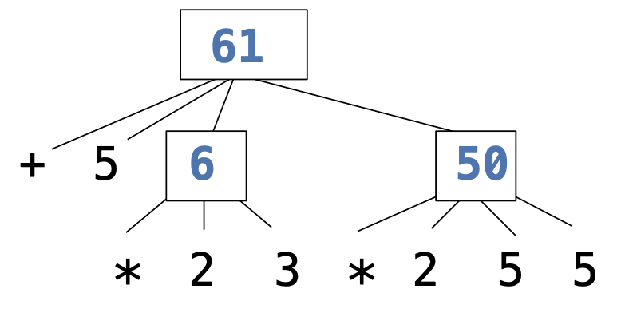

High-level programming language
(Python, C++, JavaScript)
⬇
Assembly language
(Hardware-specific)
⬇
Machine language
(Hardware-specific)
The language of the machine is all 1s and 0s, often specifying the action and the memory address to act on:
00000100 10000010 # Load data in 10000010
00000001 10000001 # Subtract data at 10000001
00000101 10000100 # Store result in 10000100
00001011 10000100 # Etc..
00001101 00010000
00010100 00000010
00000101 10000011
00001111 00000000
00010100 00000011
00000101 10000011
00001111 00000000
Code is executed directly by the hardware.
Assembly language was introduced for (slightly) easier programming.
| Machine code | Assembly code |
|---|---|
|
|
Assembly still has a 1:1 mapping with machine language, however.
Higher level languages:
if x > y:
z = 2
else:
z = 3
Statements & expressions are either interpreted by another program or compiled (translated) into a lower-level language.
A compiler translates source code into machine code, so that the machine code can be distributed and run repeatedly.
An interpreter runs source code directly, without first compiling it into machine code.
In its most popular implementation (CPython), Python programs are interpreted but have a compile step:
Source code → Compiler → Bytecode → Virtual Machine → Output
In order to either interpret or compile source code, a parser must be written to understand that source code.
Compilers have parsers:
So do interpreters!
Parsing: turning a string representation of an expression into a structured object representing the expression.
A Scheme list is written as elements in parentheses:
(<element_0> <element_1> ... <element_n>)
Each <element> can be a combination or primitive.
(+ (* 3 (+ (* 2 4) (+ 3 5))) (+ (- 10 7) 6))
A parser takes text and returns an expression object.
| Text | Lexical Analysis | Tokens | Syntactic Analysis | Expression |
|---|---|---|---|---|
'(+ 1'
| → | '(', '+', 1
| → | Pair('+', Pair(1, ...))
printed as (+ 1 (- 23) (* 4 5.6)) |
' (- 23)'
| → | '(', '-', 23, ')'
| ||
' (* 4 5.6))'
| → | '(', '*', 4, 5.6, ')', ')'
|
' (* 4 5.6))' → '(', '*', 4, 5.6, ')', ')'
'(', '+', 1, ... → Pair('+', Pair(1, ...))
In scheme_reader.py, each call to scheme_read consumes the input tokens for exactly one expression.
The Pair class represents Scheme lists.
class Pair:
def __init__(self, first, second):
self.first = first
self.second = second
Well-formed list: (second element is either a pair or nil)
s = Pair(1, Pair(2, Pair(3, nil)))
print(s) # (1 2 3)
len(s) # 3
Improper lists:
print(Pair(1, 2)) # (1 . 2)
print(Pair(1, Pair(2, 3))) # (1 2 . 3)
len(Pair(1, Pair(2, 3))) # Error!
A programming language has:
To create a new programming language, you need either one of these:
The Calculator language has primitive expressions and call expressions. (That's it!)
A primitive expression is a number: 2 -4 5.6
A call expression is a combination that begins with an operator (+, -, *, /) followed by 0
or more expressions:
(+ 1 2 3) (/ 3 (+ 4 5))
| Expression | Expression tree | Representation as pairs |
|---|---|---|
|  |  |
The value of a calculator expression is defined recursively.
+: Sum of the arguments
*: Product of the arguments
-: If one argument, negate it. If more than one, subtract the rest from the first.
/: If one argument, invert it. If more than one, divide the rest from the first.
| Expression | Expression Tree |
|---|---|
|  |
Evaluation: Turning a structured representation of a program into the expected program output according to the language semantics.
The eval function computes the value of an expression.
It is a generic function that behaves according to the type of the expression (primitive or call).
| Implementation | Language semantics |
|---|---|
|
A number evaluates... A call expression evaluates... |
The apply function applies some operation to a (Scheme) list of argument values
In calculator, all operations are named by built-in operators: +, -, *, /
| Implementation | Language semantics |
|---|---|
|
|
The user interface for many programming languages is an interactive interpreter
Exceptions can be raised during lexical analysis, syntactic analysis, eval, and apply.
Example exceptions
2.3.4 raises ValueError("invalid numeral")
) raises SyntaxError("unexpected token")
TypeError("() is not a number or call expression")
- raises TypeError("- requires at least 1 argument")
An interactive interpreter prints information about each error.
A well-designed interactive interpreter should not halt completely on an error, so that the user has an opportunity to try again in the current environment.